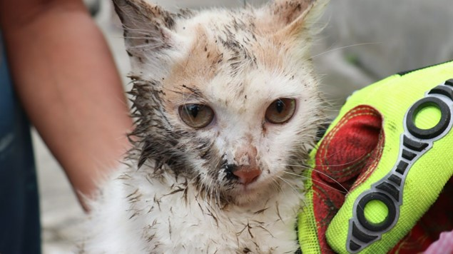
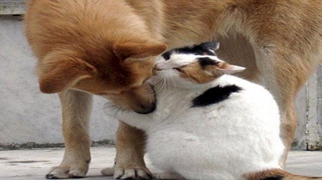

El Problema
La sobrepoblación de animales domésticos, como perros y gatos, es un problema grave en muchas comunidades. La falta de esterilización conduce a la reproducción descontrolada, lo que resulta en un aumento del número de animales abandonados, maltratados y sin hogar. Esta situación causa sufrimiento innecesario y pone en peligro la salud y seguridad de los animales y las personas.

Es importante abordar este problema de manera efectiva para garantizar el bienestar de los animales y promover una convivencia armoniosa entre humanos y mascotas.
Cómo Puedes Contribuir
Hay varias formas en las que puedes contribuir a resolver el problema de la sobrepoblación animal:
- Haciendo una donación para financiar programas de esterilización.
- Participando como voluntario en jornadas de esterilización.
- Adoptando animales esterilizados en lugar de comprarlos.
- Compartiendo información sobre la importancia de la esterilización con amigos y familiares.

Tu contribución puede marcar la diferencia en la vida de muchos animales y en la construcción de una comunidad más compasiva.